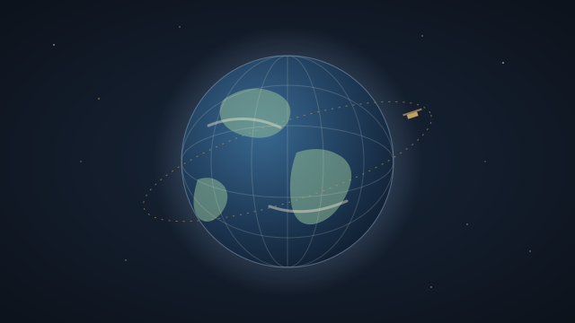

Image Explorer
See the Earth as the satellites saw it on any day since 2000, turn a globe inside the real sky, and search the picture libraries of NASA and ESA, all in one place.
Three ways in

The Earth, any day
The whole planet as NASA's satellites photographed it, one day at a time, from February 2000 to yesterday.
- Any date, or play the days like a film
- True colour, night lights, sea temperature, snow, clouds, smoke and fires
- Search 100,000 places; tap anywhere to learn what is there

A globe in the real sky
The Earth turned to the present moment, lit by the Sun, inside the sky with 1,300 galaxies, nebulae and clusters.
- Fires, storms, volcanoes and earthquakes happening now
- Astronauts' newest photos from the Space Station
- Find any object, then see it on the map or in the pictures


NASA's and ESA's pictures
One search across NASA's Image and Video Library and ESA's Webb and Hubble archives.
- Results as you type, with spelling help
- Mission buttons: Apollo 11, Hubble, Webb, Artemis and more
- Every picture and video with its own credit line
Why this exists
Three ways to look at space and at the Earth from space, built only on the agencies' open data: an Earth map with a new picture every day, a globe that sits in the stars as they really are tonight, and one search across NASA's and ESA's picture and video collections.
NASA and ESA publish an enormous amount of imagery, but it is spread over many services, each with its own way in. The Image Explorer brings it together in one place you can use without an account, a key or any cost, and says plainly where every picture comes from.
Straight from the agencies
Pictures load from NASA's and ESA's own servers, so a slow agency server can mean a slow picture.
The newest day fills in
Each satellite photographs the Earth in strips: on the newest day some areas are still empty, and gaps show a cloud-free picture.
Credited, picture by picture
Every picture from ESA carries its own credit line; NASA's pictures are in the public domain.
Where the pictures come from
We acknowledge the use of imagery provided by services from NASA's Global Imagery Browse Services (GIBS), part of NASA's Earth Science Data and Information System (ESDIS).
Pictures on this page: NASA Blue Marble (GIBS); Carina Nebula, Southern Ring Nebula and Webb's First Deep Field, NASA, ESA, CSA and STScI (NASA Image and Video Library).